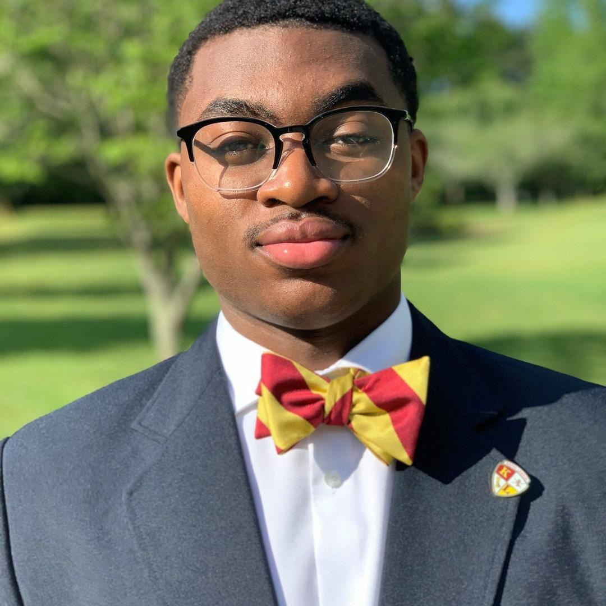

Hi, i am Todd Cooper
Web Developer based in Lancaster, Ohio
I'm passionate about programming and interested in
- Collaborating with skilled developers
- Enhancing my skills and mentoring other developers
- Crafting elegant code
- Enhancing my skills and mentoring other developers